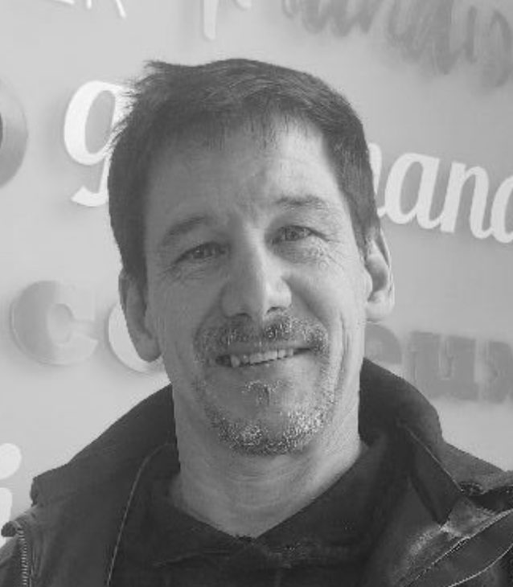

Martin Boisvert
Maître Plombier & PDG
À 56 ans, Martin cumule plus de 45 ans d'expérience, dont 35 ans en tant que maître plombier. Fils de plombier, il a débuté jeune aux côtés de son père. Suite à des divergences d'opinions, il a fondé sa propre entreprise, perpétuant l'excellence paternelle sous une nouvelle bannière.
Cedrick Boisvert
Manœuvre Spécialisé
Dans la fin de la vingtaine, Cédrick possède près de 10 ans d'expérience. Passionné de belles voitures, il travaille avec une efficacité redoutable. Il sait gérer son temps à la perfection et trouve toujours le moyen d'accomplir le travail dans les délais impartis.